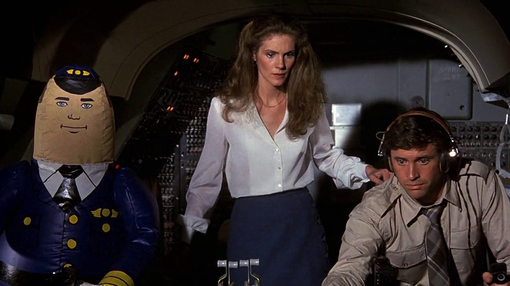
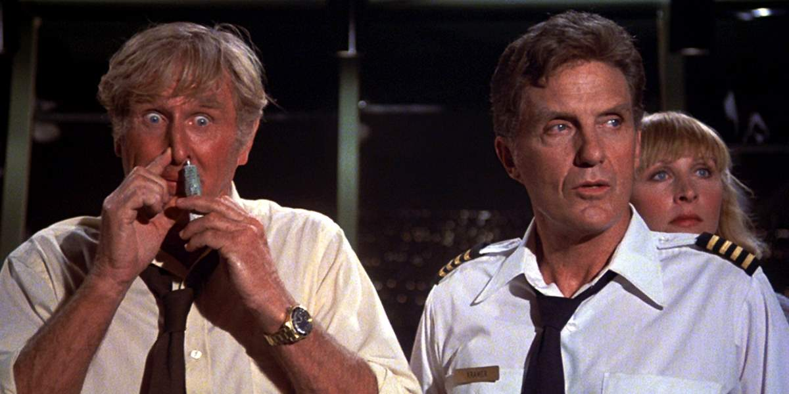
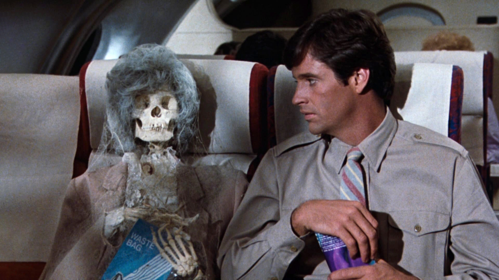
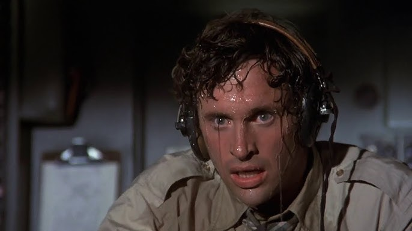

Bem, cá estamos embarcando nesse avião simples e risonho, nessa decolagem feita há mais de 40 anos, para conferir se esse voo foi
bem-sucedido ou se teremos uma péssima aterrissagem. Adiantando um pouco, é claro, é um voo tranquilo e divertido, porém, com algumas turbulências pelo caminho.
Apertem os cintos. Apertem os Cintos... O Piloto Sumiu! é obviamente uma comédia perceptível de longe, seja pelos pôsteres do filme ou
pelo seu nome totalmente chamativo. E bem, dá para fazer uma má comédia? Às vezes sim, mas não se preocupe, não é o caso aqui. Podemos esperar uma decolagem
tranquila e acima da média.

As piadas do filme são muito bem feitas. No geral, o humor surge de ações simples dos personagens, muitas vezes em cenas prolongadas que vão ficando cada vez mais absurdas conforme a cena avança, ou simplesmente são jogadas na sua cara. Sim, o piloto automático com certeza entra nessa categoria, e algumas cenas talvez até vão além, como ressuscitar o próprio piloto automático. Não tenho muito o que reclamar: o humor, e grande parte dele mesmo considerando o contexto de 1980, funcionou muito bem para mim.



Leslie Nielsen é a própria encarnação das paródias e das comédias escrachadas, e novamente aqui ele assume um cargo de autoridade dentro do caos que
o cerca. Claro, há diálogos que vão te fazer soltar um leve sorriso ou até gargalhar com coisas tão ridículas que saem da boca do personagem.
Mas, como dito antes, temos uma turbulência nesse voo. Grande parte dos flashbacks do casal principal é simplesmente tediante, exceto por mostrar exatamente como uma pessoa
pode ficar depois de ouvir aquela história pela centésima vez. As duas vítimas das histórias de Ted representam muito bem o espectador que não se anima tanto com aquelas cenas
românticas
"Nem toda piada acerta em cheio, mas a quantidade de absurdos a bordo garante que sempre haverá algo para arrancar uma risada antes do pouso."
E claro, boa parte do pré-voo acaba não tendo muito o que oferecer em termos de entretenimento, especialmente durante alguns momentos mais arrastados do romance principal. Felizmente, assim que todos embarcam e a situação sai do controle, o filme encontra sua melhor forma.
Com um humor atemporal, piadas que não têm medo de parecer ridículas e uma ótima atuação de Leslie Nielsen, Apertem os Cintos... O Piloto Sumiu! continua sendo uma comédia extremamente divertida. Mesmo enfrentando algumas turbulências pelo caminho, a aterrissagem é bem-sucedida e faz essa viagem valer a pena.
✔ O QUE É BOM
- Humor sólido que continua funcionando mesmo décadas depois.
- Leslie Nielsen rouba a cena em praticamente todas as suas aparições.
✖ O QUE NÃO É BOM
- Os flashbacks do casal principal são longos e pouco interessantes.
- O início demora um pouco para engrenar.
Discussão e Opiniões